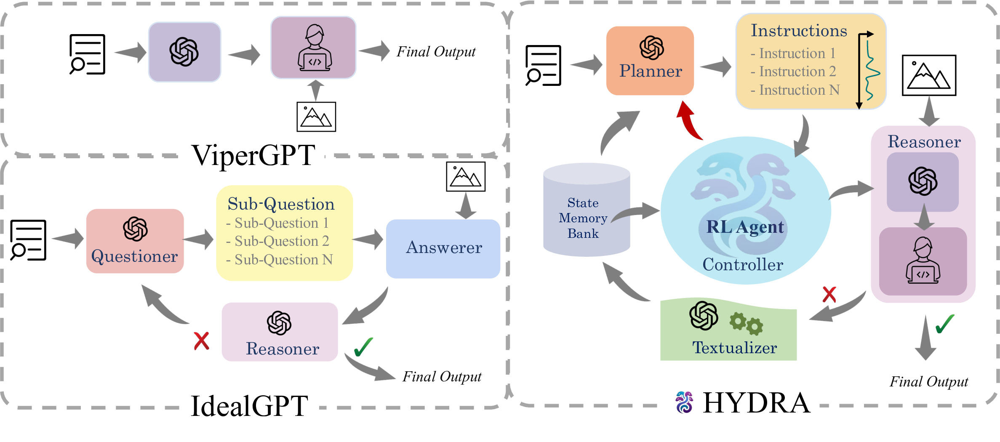
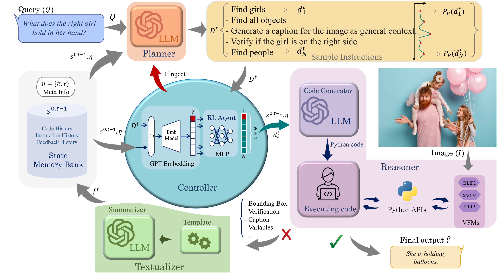

Qualitative Results

The GitHub repository will be released soon (In JULY 2024) ! Thank you for staying tuned.
A multi-stage dynamic compositional visual reasoning framework designed for reliable and incrementally progressive general reasoning 🔥🔥🔥

Recent advances in visual reasoning (VR), particularly with the aid of Large Vision-Language Models (VLMs), show promise but require access to large-scale datasets and face challenges such as high computational costs and limited generalization capabilities. Compositional visual reasoning approaches have emerged as effective strategies; however, they heavily rely on the commonsense knowledge encoded in Large Language Models (LLMs) to perform planning, reasoning, or both, without considering the effect of their decisions on the visual reasoning process, which can lead to errors or failed procedures. To address these challenges, we introduce HYDRA, a multi-stage dynamic compositional visual reasoning framework designed for reliable and incrementally progressive general reasoning. HYDRA integrates three essential modules: a planner, a Reinforcement Learning (RL) agent serving as a cognitive controller, and a reasoner. The planner and reasoner modules utilize an LLM to generate instruction samples and executable code from the selected instruction, respectively, while the RL agent dynamically interacts with these modules, making high-level decisions on selection of the best instruction sample given information from the historical state stored through a feedback loop. This adaptable design enables HYDRA to adjust its actions based on previous feedback received during the reasoning process, leading to more reliable reasoning outputs and ultimately enhancing its overall effectiveness. Our framework demonstrates state-of-the-art performance in various VR tasks on four different widely-used datasets.
A multi-stage dynamic compositional visual reasoning framework designed for reliable and incrementally progressive general reasoning🔥🔥🔥.

| Type | Method | IoU(%) | |
|---|---|---|---|
| Ref | Ref+ | ||
| E2E | OWL-ViT | 30.3 | 29.4 |
| OWLv2 | 33.5 | 31.7 | |
| GLIP | 55.0 | 52.2 | |
| ReCLIP | 58.6 | 60.5 | |
| KOSMOS-2 | 57.4 | 50.7 | |
| Compositional | Code-bison | 44.4 | 38.2 |
| ViperGPT | 59.8 | 60.0 | |
| HYDRA | 61.7 | 61.1 | |
| Type | Method | ACC(%) |
|---|---|---|
| E2E | PNP-VQA | 35.9 |
| PICa | 43.3 | |
| BLIP-2 | 45.9 | |
| Flamingo (9B) | 44.7 | |
| MiniGPT-4 (13B) | 37.5 | |
| LLaVA (13B) | 42.5 | |
| InstructBLIP (13B) | 47.9 | |
| Compositional | IdealGPT | 19.4 |
| ViperGPT | 40.7 | |
| HYDRA | 48.6 |
| Type | Method | ACC(%) |
|---|---|---|
| E2E | BLIP-2 | 45.5 |
| MiniGPT-4 (13B) | 30.8 | |
| LLaVA (13B) | 41.3 | |
| PandaGPT (13B) | 41.6 | |
| ImageBind-LLM (7B) | 41.2 | |
| Compositional | IdealGPT | 41.7 |
| ViperGPT | 37.9 | |
| Ours | 47.9 |
| Method | Train | Test | ACC(%) |
|---|---|---|---|
| ViLT | GQA | OK-VQA | 32.13 |
| ViperGPT | -- | OK-VQA | 40.74 |
| HYDRA | GQA | OK-VQA | 48.17 |
| OK-VQA | OK-VQA | 48.63 | |
| HYDRA | OKVQA | A-OKVQA | 55.94 |
| A-OKVQA | A-OKVQA | 56.35 |
@inproceedings{ke2024hydra,
title={HYDRA: A Hyper Agent for Dynamic Compositional Visual Reasoning},
author={Fucai Ke and Zhixi Cai and Simindokht Jahangard and Weiqing Wang and Pari Delir Haghighi and Hamid Rezatofighi},
booktitle={European Conference on Computer Vision},
year={2024},
organization={Springer}
}